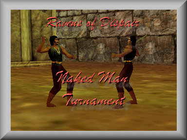

Ravens Of Dispair: Naked Man Tournament: Rules
| 1: | Player must be humen, lvl 1, with only the starting equipment (tunics, swords, spells, ect..). |
| 2: | No buffs!! If you start with a buff spell you may use it. Buffs from outher players are not alowed. Merchent bot spells eaven lvl one spells are not allowed. |
| 3: | Fights will be to the death in the freeport arena. Help from non fighting players will disqualafi the fighter that is helped and the helping party if in the turnament. |
| 4: | One fight at a time. Fights will be organized, started, stoped, and winner will be deturmend by Keny or anouther ranking offaser. |
| 5: | Prizes will be givein for 1st 2nd and 3rd place. 1st place winer will be giveing 1st choice in prizes, then 2nd place winer and so on. |
| 6: | Names must resembel your main charators name in some way. ie kenytwo, battlebojax, fryfighter. This will make shure one player dosent win and anouther player gets the prize. |
| 7: | Fighting chars must be in freeport. Your main char dosent have to be in freeport. Wolfkeeper will deliver the prizes to your main char anywhere in the world. |
| 8: | Fighting chars can me any class and/or denaty. Theay must me humen and theay must be naked. Starting stats (ie str, sta, agi, ext...) are up to the fighter and how theay want to spend there points |
| 9: | Fighters must be registered members of Ravens of Dispair both in game and on the website. Your alts for the turnament dont have to be signed up just your main charator. |
| 10: | Fighters must pre sign up at the website if theay wish to atend this event. There is a button on the main members page to do this. |
| 11: | Time and date of the turnament will be deturmend at a later time. There will be a voteing on what day to hold the tournament. |
| 12: | Rules may be changed at any time with out notice! |